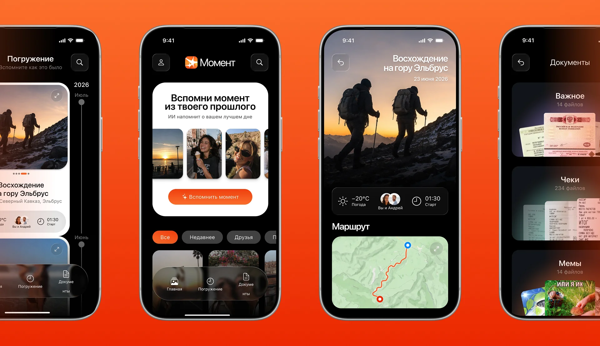
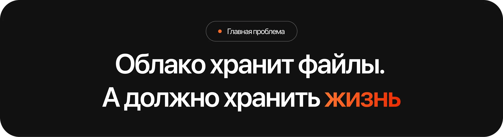
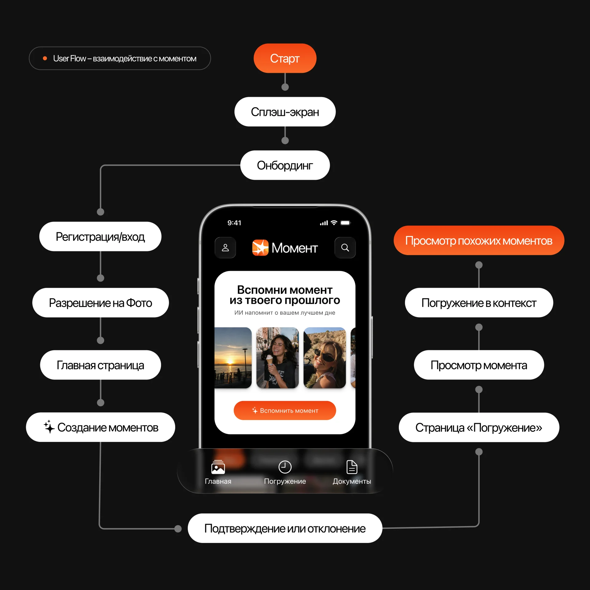
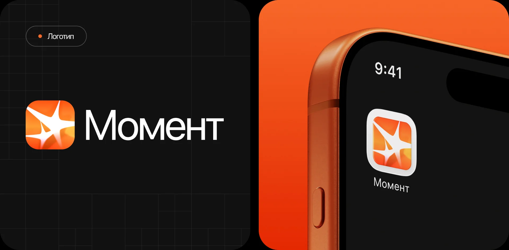
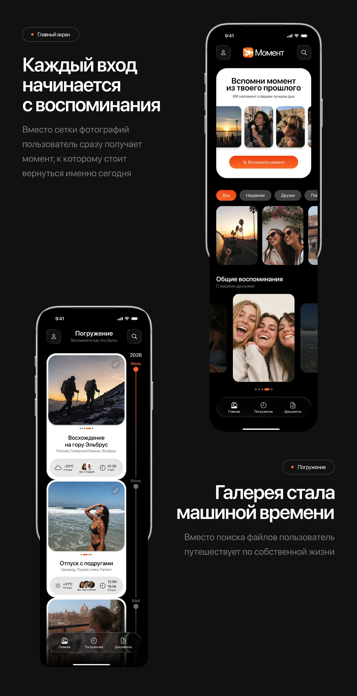
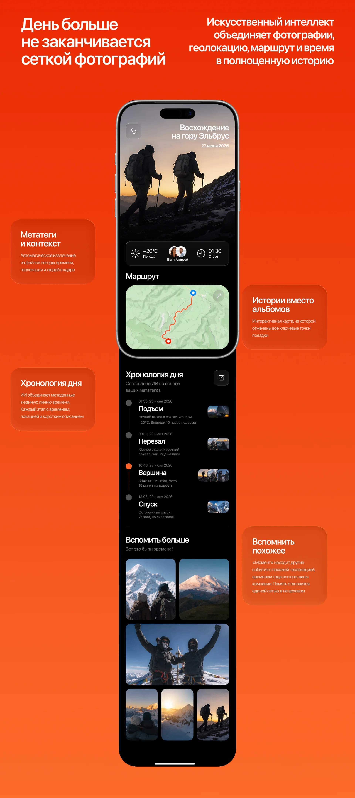

VK x Dprofile / Цифровое Облако Будущего
Конкурсная работа для Russian Design Cup 2026 от VK × Drofile. «Момент» – это мобильное облако без папок и сетки. ИИ анализирует метаданные, лица, геолокацию, время и погоду и собирает файлы в истории с хронологией, маршрутом и людьми в кадре. Время выполнения: 2 недели.
Спроектировать мобильное облако будущего, отказавшись от папок и стандартной сетки: создать новую визуальную и интерактивную метафору хранения, где медиафайлы листаются как живой альбом, а интерфейс подстраивается под контекст жизни пользователя.
Исследование и анализ рынка, проектирование продуктовой логики и пользовательских сценариев, UX/UI дизайн, брендинг, визуальный язык и дизайн-система.

Создание концепта облака для конкурса
Передо мной стояла задача спроектировать мобильное облако будущего
Полностью отказавшись от папок и стандартной сетки, и создать новую визуальную и интерактивную метафору хранения.
Существующие галереи и облака имели системные ограничения:
- пользователи тонули в тысячах файлов и не могли найти нужное;
- воспоминания и полезные документы смешивались в одной ленте;
- контекст терялся: непонятно, где, когда и с кем был сделан кадр;
- отсутствовала эмоциональная связь с прошлым;
- ручная сортировка и очистка вызывали раздражение.
В рамках подхода был разработан полностью новый интерфейс:
- ИИ анализирует метаданные, лица, геолокацию и собирает файлы в истории;
- выстроена навигация, где документы отделены от воспоминаний;
- упрощены пользовательские пути: человек листает готовые моменты;
- продуманы тактильные жесты и микроанимации.
В результате облако переосмыслено как пространство, где память оживает: «Момент» не хранит файлы, он собирает жизнь в истории.

Анализ пользовательских путей
Я проанализировала типичные пути пользователей в галереях и облачных сервисах и на их основе проработала один основной сценарий.
Существующие галереи имели системные ограничения: файлы терялись в тысячах других, воспоминания смешивались с документами, контекст пропадал, а ручная сортировка вызывала раздражение. Из-за ограниченности времени в конкурсе я рассмотрела один основной сценарий, а точнее от запуска и онбординга до создания момента, его просмотра и погружения в контекст с хронологией, маршрутом и людьми в кадре. ИИ превращает разрозненные файлы в осмысленные истории, и пользователь не ищет, а листает готовые моменты.

Брендинг
Я разработала визуальный язык сервиса: логотип, фирменный градиент и систему компонентов, которые передают идею ожившей памяти.
В основе логотипа лежит образ вспышки или искры, которая символизирует момент, выхваченный из потока времени. Форма собрана из нескольких лучей, расходящихся от центра, что перекликается с идеей ИИ, который собирает разрозненные кадры в единую историю. Фирменный градиент от глубокого красно-оранжевого к тёплому янтарному задаёт эмоциональный тон: тепло, энергию и живость, противопоставляя сервис холодным и безликим галереям. Градиент работает на обложке, в иконке, в акцентах интерфейса и создаёт узнаваемость на любом носителе.

Главный экран и погружение
Каждый вход начинается с воспоминания, а не с сетки фотографий
Главный экран предлагает момент, к которому стоит вернуться именно сегодня, и показывает его крупно, с датой и количеством файлов. Дальше пользователь листает не папки, а собственную жизнь: годы, месяцы и события выстроены в ленту, где каждое воспоминание раскрывается целиком. Внутри момента видны фотографии, погода, время старта и люди в кадре, а ИИ уже собрал все это без участия человека. Отдельно живут общие воспоминания с друзьями и близкими, отдельно документы, чтобы рабочий шум не смешивался с личным. Галерея перестает быть складом файлов и становится машиной времени, по которой можно путешествовать без поиска и сортировки.

Экран момента
Искусственный интеллект объединяет фотографии, геолокацию, маршрут и время в полноценную историю.
Система автоматически извлекает из файлов погоду, время старта и людей в кадре, а затем выстраивает хронологию дня по этапам. Подъем, перевал, вершина, спуск. Каждый этап получает время, локацию и краткое описание. Отдельно строится интерактивный маршрут с ключевыми точками поездки, чтобы путь читался целиком. Внизу блок похожих воспоминаний, где собраны события с похожей геолокацией, временем года или составом компании. Память становится единой сетью, а не архивом.

Вывод
Проект занял 6 место среди дизайн-лидов на Russian Design Cup 2026
Проект получил высокую оценку жюри за продуктовую логику и визуальный язык. Продуктовый потенциал вижу в масштабировании на семейные аккаунты, где моменты собираются общими усилиями, и в интеграции с умными камерами и носимыми устройствами. При наличии большего времени, я бы провела полноценные интервью с пользователями, протестировала прототип на реальных архивах и проработала сценарии для документов и рабочих файлов.